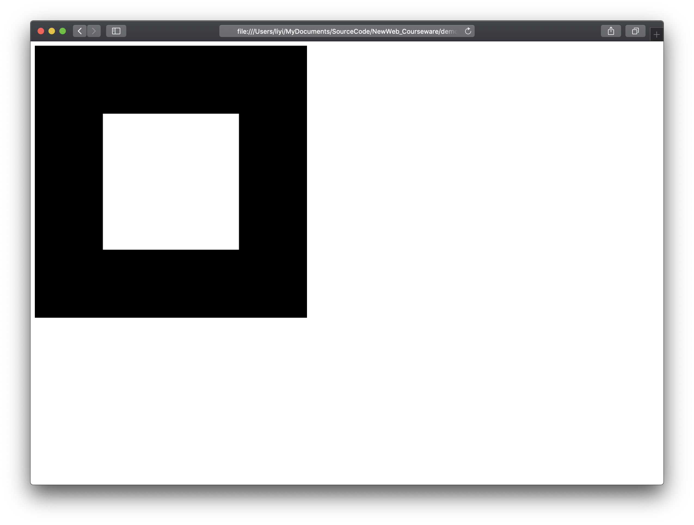

Canvas · Context · Shader · Buffer · Attribute · Draw Call

要让这个图形出现，你认为至少需要哪些“角色”和“工具”？
HTML、Canvas、JavaScript、顶点数据、Shader……还能想到什么？
提供页面与绘图表面
组织程序、资源与调用
顶点位置/颜色等
GPU执行的程序
上传并解释数据
触发绘制
vertices 顶点数据drawArrays()先给出六步顺序，并思考每一步“依赖什么、产生什么”。
核心依赖规律：B 与 C 彼此独立可交换；但 E 强依赖 C 与 D，F 必须在所有资源配置就绪后最后调用。
<!DOCTYPE html>
<html>
<head>
<script id="vertex-shader" type="x-shader/x-vertex">...</script>
<script id="fragment-shader" type="x-shader/x-fragment">...</script>
<script src="square.js"></script>
</head>
<body>
<canvas id="square-canvas" width="500" height="500"></canvas>
</body>
</html><canvas>：绘图目标square.js：应用逻辑var canvas = document.getElementById("square-canvas");
var gl = canvas.getContext("webgl2");
if(!gl){ alert("WebGL 2.0 unavailable"); }
它是当前 Canvas 与 WebGL API 的调用入口；之后所有
gl.* 调用都通过它发出。
<html>
<head>
<meta charset="utf-8">
<script id="vertex-shader" type="x-shader/x-vertex">...vertex shader...</script>
<script id="fragment-shader" type="x-shader/x-fragment">...fragment shader...</script>
<script src="../js/common/webgl-utils.js"></script>
<script src="../js/common/initShaders.js"></script>
<script src="../js/ch01/square.js"></script>
</head>
<body>
<canvas id="square-canvas" width="500" height="500"></canvas>
</body>
</html>原课件中的Shader可内嵌在HTML，也可根据项目结构拆为外部文件。
对浏览器/WebGL环境相关的常用操作进行封装。
读取、编译、链接Shader并创建Program。
提供几何计算工具；教材不同版本可能使用MV.js或其它库。
真正的应用程序逻辑。
#version 300 es
in vec4 aPosition;
void main(){
gl_Position = aPosition;
}#version 300 es
precision mediump float;
out vec4 fColor;
void main(){
fColor = vec4(1.0, 1.0, 0.0, 1.0);
}var program = initShaders(gl, "vertex-shader", "fragment-shader");
gl.useProgram(program);var points = new Float32Array([
-0.5, -0.5,
0.5, -0.5,
0.5, 0.5,
-0.5, 0.5
]);这里只有8个浮点数。它们还没有告诉GPU“这是一块正方形”。
var buffer = gl.createBuffer();
gl.bindBuffer(gl.ARRAY_BUFFER, buffer);
gl.bufferData(gl.ARRAY_BUFFER, points, gl.STATIC_DRAW);var loc = gl.getAttribLocation(program, "aPosition");
gl.vertexAttribPointer(loc, 2, gl.FLOAT, false, 0, 0);
gl.enableVertexAttribArray(loc);
“从当前 Buffer 中，每次读取 2 个 float，送给 Shader 的
aPosition。”
"use strict";
var gl;
window.onload = function init(){
var canvas = document.getElementById("square-canvas");
gl = canvas.getContext("webgl2");
var points = new Float32Array([
-0.5, -0.5, 0.5, -0.5,
0.5, 0.5, -0.5, 0.5
]);
gl.viewport(0, 0, canvas.width, canvas.height);
gl.clearColor(1.0, 0.0, 0.0, 1.0);阅读方式：先找“资源角色”，再看API细节。
var program = initShaders(gl, "vertex-shader", "fragment-shader");
gl.useProgram(program);
var buffer = gl.createBuffer();
gl.bindBuffer(gl.ARRAY_BUFFER, buffer);
gl.bufferData(gl.ARRAY_BUFFER, points, gl.STATIC_DRAW);
var aPosition = gl.getAttribLocation(program, "aPosition");
gl.vertexAttribPointer(aPosition, 2, gl.FLOAT, false, 0, 0);
gl.enableVertexAttribArray(aPosition);
render();
};
function render(){
gl.clear(gl.COLOR_BUFFER_BIT);
gl.drawArrays(gl.TRIANGLE_FAN, 0, 4);
}| 职责块 | 代表调用 | 你应该问的问题 |
|---|---|---|
| 环境 | getContext / viewport | 画在哪里？ |
| GPU程序 | initShaders / useProgram | GPU执行什么？ |
| 数据资源 | create/bind/bufferData | 数据在哪里？ |
| 接口描述 | vertexAttribPointer | 这些字节怎么解释？ |
| 绘制 | drawArrays | 用什么图元、多少顶点？ |
gl.viewport(0, 0, canvas.width, canvas.height);Canvas中用于显示图像的像素矩形。
gl.clearColor(1.0, 0.0, 0.0, 1.0);清空颜色缓存时使用的背景颜色。
function render() {
gl.clear(gl.COLOR_BUFFER_BIT);
gl.drawArrays(gl.TRIANGLE_FAN, 0, 4);
}① 怎样解释顶点？
② 从哪个顶点开始？
③ 使用多少顶点？
window.onload = init：页面加载后完成资源初始化。
鼠标、键盘、定时器、requestAnimationFrame 等事件触发状态变化和重绘。
交互式图形程序本质上是事件驱动的长期运行程序。
图形空间中的可见范围。
Canvas中的像素矩形。
两者宽高比不一致时，图像会产生拉伸或压缩。
width/2height/2
红 → 蓝
POINTS / LINE_STRIP / TRIANGLE_FAN
修改 fColor
每次修改前先投票预测结果；运行后必须解释“是哪一层发生了变化”。
gl.viewport(0, 0, canvas.width / 2, canvas.height / 2);视口变换层：规范化坐标到屏幕物理像素的映射范围
顶点数据没有变，为什么图像大小和位置变了？
因为裁剪坐标最终要映射到指定的 Viewport 像素矩形。视口宽高减半，渲染出的正方形也随之缩小到左下角四分之一区域。
// 原代码: gl.clearColor(1.0, 0.0, 0.0, 1.0); (红底)
gl.clearColor(0.0, 0.0, 1.0, 1.0); // 蓝色背景
gl.clear(gl.COLOR_BUFFER_BIT);帧缓冲清空层：仅刷新颜色缓冲区底色，与后续图元绘制解耦
“背景”是谁画出来的？修改它会影响几何图形吗？
不会。clearColor 仅设置清空颜色缓存（Color Buffer）时填充的底色；正方形由随后的着色器和绘制调用覆盖写入，处于管线不同阶段。
// 替换原 gl.TRIANGLE_FAN
gl.drawArrays(gl.LINE_LOOP, 0, 4);显存中的顶点数据改动了吗？换 MODE 真正改变的是什么？
显存顶点数据完全没有变。改变的是图元装配层对顶点序列的拓扑连接与填充解释方式。
4 个独立点
仅在顶点位置绘制孤立像素点
正方形闭合线框
首尾相连封闭折线轮廓
实心正方形
扇形三角面片拼合填充
#version 300 es
precision mediump float;
out vec4 fColor;
void main(){
// 原黄色 vec4(1.0, 1.0, 0.0, 1.0) -> 改为纯绿
fColor = vec4(0.0, 1.0, 0.0, 1.0);
}片元着色层：GPU 可编程管线中决定最终像素输出的阶段
只在 JS 脚本中改一个变量，能改变正方形颜色吗？
不能（若颜色未关联 attribute/uniform）。在现代可编程管线中，图元内部片元的颜色完全由片元着色器计算输出。
教师故意删掉一行或改错变量名，学生先判断最可能的层级。
“下面是错误信息和相关代码。请不要重写整个程序，只列出最可能的3个错误位置，并给出每一项的验证方法。”
AI提出假设 → 浏览器Console/代码验证 → 只修改有证据支持的问题。
你学的不是一个“正方形程序”，而是图形程序的一般结构。
function divideTriangle(a, b, c, count) {
if (count == 0) triangle(a, b, c);
else {
// midpoints
divideTriangle(..., count - 1);
divideTriangle(..., count - 1);
divideTriangle(..., count - 1);
}
}数据生成算法从“随机点”换成“递归细分”。
GPU编程结构基本不变。
数据增加 z 坐标。
三维结构需要更多视觉线索。
解决前后遮挡：gl.enable(gl.DEPTH_TEST)
画出你自己的“最小WebGL程序运行图”，不要求和教师图完全一样，但必须解释每条箭头。